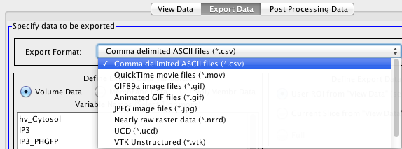

Results from simulations are automatically stored on the remote database server. Simulation results may be exported immediately after the simulation or at your leisure by using the Export option located on the bottom of the Results dialog.
Variables You can export data for a single variable, combination of variables, or all the variables. Only data pertaining to your selected variables will be ex- ported. To select more than one variable, select one variable and then hold down the Shift key to select additional variables. To select the entire list of variables, select the first variable in the list and then hold down the Shift key and select the last variable in the list.

Export Format: Spatial data is limited to export as Comma delimited ASCII files (.csv files). Comma delimited ASCII files are used for organizing data in a spread- sheet format.
Select Data Type to Export: Choose between Variable values and Particle data. Additional Formatting: You can switch the orientation of the rows and columns. Some spreadsheet programs limit the number of columns to 256 columns. If your data should exceed this, you may opt to switch the rows and columns so the program will still read the data.
Start Export: Once you have made your Time and Variable selections press Start Export to initiate the file export. Choose the appropriate ASCII Settings and press OK. Once the export process is complete, a Save dialog will appear. Navigate to an area on your local drive to store the .zip file. Export Monitor The Export Monitor displays job ID, file Format, Progress bar, Completed/Not Completed status, File Location and Simulation ID.
Spatial Results: Spatial simulation data may be exported in multiple file formats: Comma Delimited ASCII files, Quick Time movie files, GIF89a image files, animated GIF files, Nearly Raw Raster Data (nrrd, simple data format,readable by external programs such as 'ImageJ'), AVS-UCD(Unstructured Cell Data format, readable by external programs such as 'ParaView') and VTK(Visualization Toolkit format,unstructured mesh,readable by external programs such as 'VisIt'). You can select one to multiple variables over time within the entire geometry, slices within a 3D geometry or specified ROIs. You can also specify the time range for data export. The default setting is no variables selected, a *.csv file, and a list of your previously defined ROIs.
Export Format: Select the format you wish to export to. This will determine the type of data that can be exported.
Define Export Data Variables: This panel provides a list of Variable Names that can be selected for export to the chosen format. The list shows variables of the type Volume, Membrane or Vol/Membr. The latter is a combined list of Volume and Membrane variables. The types of variables available for export depend on the format type (See Chart above).
Variables: You can export data for a single variable, combination of variables, or all the variables. Only data pertaining to your selected variables will be exported. To select more than one variable, select one variable and then hold down the Shift key to select additional variables. To select the entire list of variables, select the first variable in the list and then hold down the Shift key and select the last variable in the list.
Define Export Data Range: User ROI is only available for *csv files and requires an ROI to have been defined in the View Data tab. Current Slice from “View Data” refers to the 2D geometry visible in View Data. This 2D geometry is either the entire geometry for the model or a slice within a 3D stack, thus it is referred to as Slice. For 3D stacks, the XY slice number is provided. In 2D Geometries the slice number is 0.

Slice: Select Slice for 3-D data sets. This includes time series in XY. Only the data for the selected slice of a 3D geometry will be exported. Choose the Z slice in the Results dialog using the +/- 1/10 increment buttons and the Axis using the XY, YZ or ZX radio buttons. The slice option is required for exporting 3- D data as QuickTime movie files and animated GIF files.
Time Interval: Select a single time point or a range of time by moving the sliders to time points shown in the left window. A range must be selected for movie files whereas a single time point may be used for .csv files and individual image files. Type a value in the text field and/ or use the slider on the time line. Click once on the selector. Use the left and right or up and down arrow keys on your keyboard to select the time point.

Start Export: This button becomes active when each specification for the export format has been selected.
Export Monitor: The Export Monitor displays job ID, file Format, Progress bar, Completed/Not Completed status, File Location and Simulation ID.
Comma Delimited ASCII Files: Comma delimited ASCII files are used for organizing data in a spreadsheet for- mat.Comma Delimited File is the only format that supports data export from Re- gions of Interest (ROIs). You can obtain statistics for these ROIs by using the Sta- tistics function/button on the View Data. See Section 8.2. When you start export for a *csv file, a pop up window will appear in which you can opt to switch the orientation of the rows and columns.

Select Data Type to Export: Choose between Variable values and Particle data.
Additional Formatting: You can switch the orientation of the rows and columns. Some spreadsheet pro- grams limit the number of columns to 256 columns. If your data should exceed this, you may opt to switch the rows and columns so the program will still read the data.
GIF Image Files: GIF image files can be generated from either a single time point or from a range of time points and from one or more variables. One image file will be exported for each data point, for each variable. (TIFF and JPEG file options will be offered in the future.) These images are useful for creating images but are not a source for subsequent analysis.
Compression mode: Forced Compression (indexed 256 colors).
Hide Membrane Outlines Display option for membrane.
Extend images by mirroring: Select the Mirroring option to extend the image size of symmetric data sets.
Image Scale: This allows for you to increase the size of the overall image set within the movie.
Membrane Thickness: This value sets the pixel thickness for membranes in the movie where 1 is the smallest visible pixel size (Hide Membrane Outline makes them invisible) and the pixel size increases with larger numbers.
Animated GIF Files: Animated GIF files can be generated from a selected range of time points.
Loop infinitely: Select loop option. Data may be exported as Comma Delimited ASCII files, Quick Time movie files, GIF89a image files, or animated GIF files.
Compression mode: Forced compression (indexed 256 colors).
Hide Membranes Outlines Display option for membrane.
Extend images by mirroring: Select the Mirroring option to extend the image size of symmetric data sets.
Image Scale: This allows for you to increase the size of the overall image set within the movie.
Membrane Thickness: This value sets the pixel thickness for membranes in the movie where 1 is the smallest visible pixel size (Hide Membrane Outline makes them invisi- ble) and the pixel size increases with larger numbers.
Nearly Raw Raster Data: Nearly Raw Raster Data (.nrrd) files support the export of multidimensional data. You can select to export a Single NRRD file, Fileset by Time or Fileset by Variable. These files can be viewed in ImageJ (See below)
Making Use of NRRD: ImageJ can import .nrrd files using the Bio-Formats library created by LOCI in conjunction with the Open Microscopy Environment. The plugin containing the LOCI ImageJ tools, which includes a BioFormats importer and exporter, is required to import the files into ImageJ. For data that contains more than 3 dimensions (e.g. x,y,z and time, or x,y,time , variable 1, variable2), you will also need the Image5D plugin, which allows you to easily scroll through multidimensional data. (Note: The first time a VCell user makes use of the BioFormats library, a dialog will appear prompting the user to give a one time approval for downloading and installation of this software due to licensing issues.)
VTK Unstructured Grid export produces *.vtu files that can be opened with VisIt or ParaView or other VTK based image processing applications